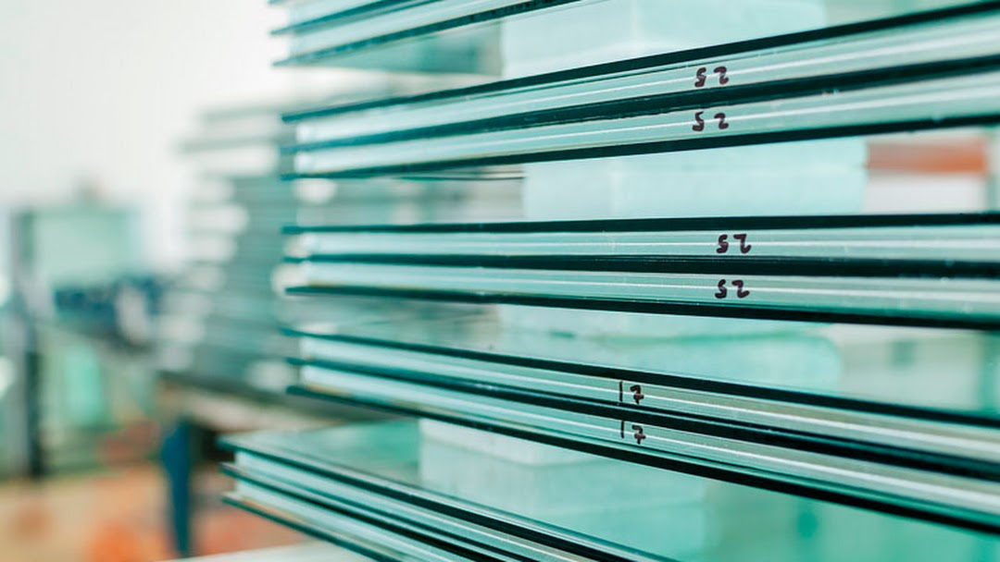
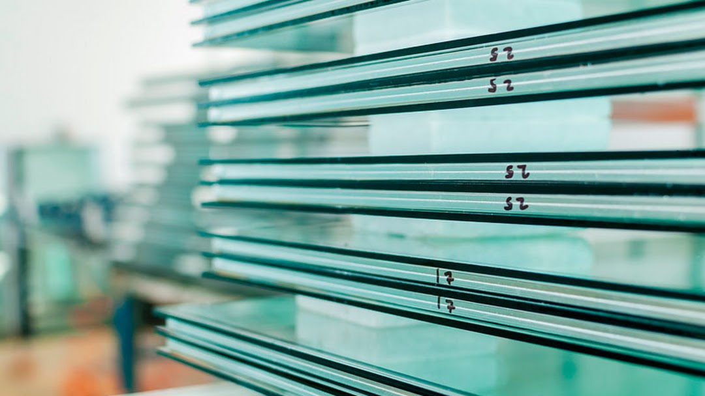

Nosotros
Con la visión y el empuje que caracteriza a los emprendedores y a los pioneros, llegaron los fundadores desde Suiza, para establecer GLASS-WK en 1876, una empresa ligada al procesado de cristales. Desafiando el paso del tiempo e incorporando innovación, tecnología y diseño en la producción, GLASS-WK se ha mantenido y posicionado como expertos en el rubro de los cristales y productos asociados. 
